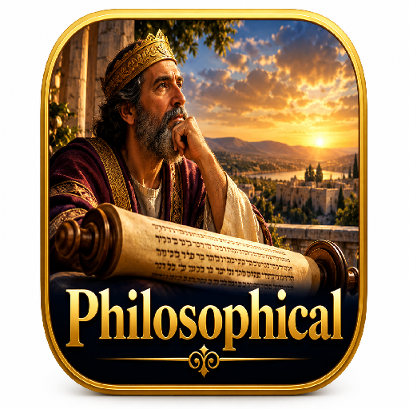

התנ״ך
THE BIBLE
קריאת התנ״ך בעברית ובאנגלית, עם שמע, פסוקים וכלי לימוד.
Read the Bible in Hebrew and English, with audio, verses and study tools.
גלגל לעוד אפליקציותSCROLL FOR MORE APPS↓
תנ״ך- הסיפורים בשאלות +GPT
BIBLE STORIES THROUGH QUESTIONS
סיפורי התנ״ך בתמונות, עם הסברים לילדים ולמבוגרים, קריינות ומשחקי ידע.
Illustrated Bible stories with explanations for children and adults, audio, and quizzes.
תנ״ך בתמונות
BIBLE IN PICTURES
מסע חזותי בין סיפורי המקרא באמצעות תמונות וקריינות.
Explore Bible stories through pictures and narration.

תנ״ך פילוסופי
PHILOSOPHICAL BIBLE
רעיונות ושאלות פילוסופיות מתוך פסוקי התנ״ך, עם הסברים ותמונות.
Explore philosophical ideas and questions from Bible verses, with explanations and illustrations.
תנ״ך היסטורי +GPT
HISTORICAL BIBLE + GPT
מסע בין אירועי התנ״ך, ציר הזמן, ממצאים ארכאולוגיים ורקע היסטורי ותרבותי.
Explore biblical events through timelines, archaeology, and historical and cultural context.
תנ״ך גיאוגרפי +GPT
GEOGRAPHICAL BIBLE + GPT
מסע בין מקומות התנ״ך, נופים, נהרות ודרכים, עם פסוקים, הסברים ותמונות.
Explore biblical places, landscapes, rivers and routes through verses, explanations and illustrations.